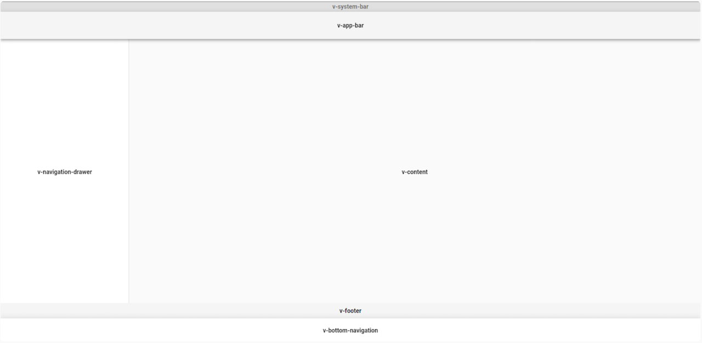
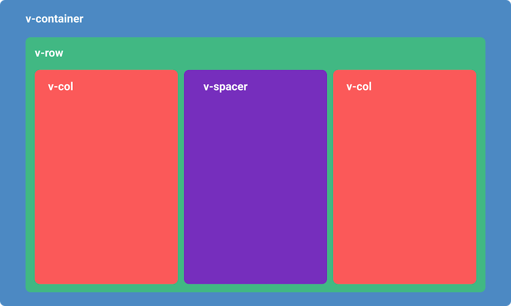
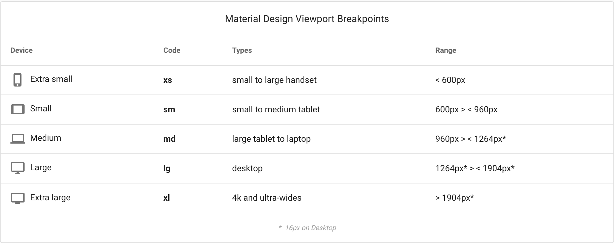

Vuetify2.xのレイアウト入門
@ 2019.12.17 【増枠】Vuetify Meetup #2 - connpass
About me
おしながき
- 発表のゴール
- アプリケーション全体のレイアウト
- Grid System
- Breakpoints
- まとめ
- 発表のゴール
- アプリケーション全体のレイアウト
- Grid System
- Breakpoints
- まとめ
Vuetify2.xを初めて使う人が
レイアウトに関連する内容にインデックスを貼れる
話すこと
- アプリケーション全体のレイアウト
- Grid systemとESLint Plugin
- Breakpoints
- 発表のゴール
- アプリケーション全体のレイアウト
- Grid System
- Breakpoints
- まとめ
- アプリケーション全体のレイアウト == エントリファイル(e.g. App.vue)で書く内容
- 参考: Application service — Vuetify.js
<v-app>
- 他のVuetifyのコンポーネントの親になるもので、アプリケーション内で1つ用意する
Application components
apppropを持つコンポーネント- 該当するコンポーネント
- v-system-bar
- v-app-bar
- v-navigation-drawer
- v-footer
- v-bottom-navigation
- 配置する場所が決められている (e.g.
v-system-barはアプリの最上部)
<v-content>
- Application componentsに応じて動的にサイズが決まるコンポーネント
<main>の中に入る要素をこの中に入れるとよい (e.g. Vue Routerの<router-view>)
こんなレイアウトが作れる
出典: https://vuetifyjs.com/en/components/application/#application-components
- 発表のゴール
- アプリケーション全体のレイアウト
- Grid System
- Breakpoints
- まとめ
- Flexboxを使った、12分割のGrid system (inspired by Bootstrap)
- 参考: Material Component Framework — Vuetify.js
関連するコンポーネント
1.xからの変更点
- コンポーネントの刷新(e.g.
<v-layout>→<v-row>)など - vuetifyjs/eslint-plugin-vuetifyを使って、チェックやAutoFixができる
- 発表のゴール
- アプリケーション全体のレイアウト
- Grid System
- Breakpoints
- まとめ
- 5つの定義済みBreakpointsや、Breakpoint service objectを使って制御する
- 参考: Breakpoints — Vuetify.js
5つの定義済みBreakpoints
Breakpoint service object
- Breakpointsに関するインスタンスプロパティ (
$vuetify.breakpoint) - 次のようなことができる
- Breakpointの閾値を変更する
- 現在のBreakpointが、特定のBreakpointの範囲内に一致しているか判定する
- 発表のゴール
- アプリケーション全体のレイアウト
- Grid System
- Breakpoints
- まとめ
- Application componentsなどを使って、大まかなレイアウトを作れる
- BootstrapライクなGrid systemを使って、細かいレイアウトを作れる
- 1.xから変更があるが、Lintなどで対応するとよい
- Breakpointの制御には、定義済みBreakpointsや、インスタンスプロパティを使える